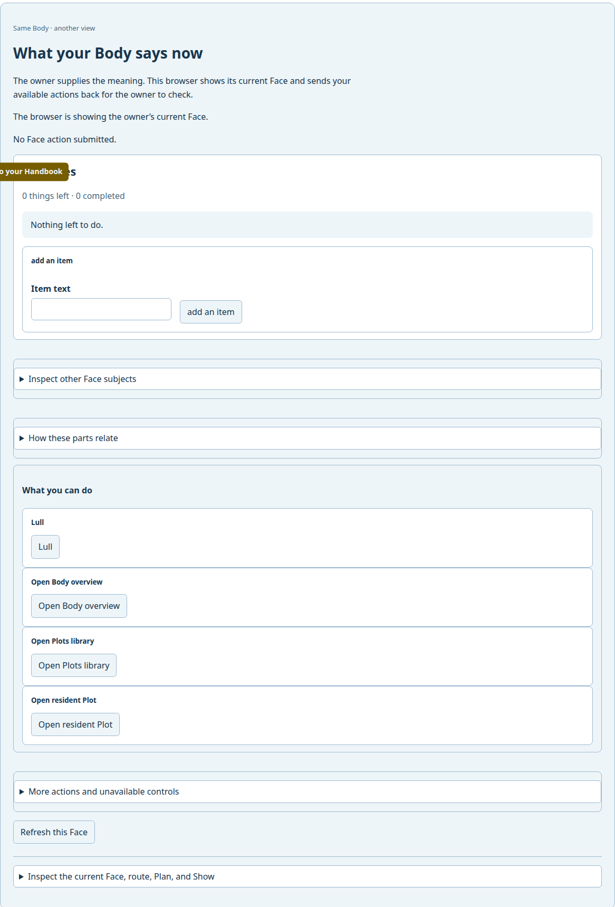
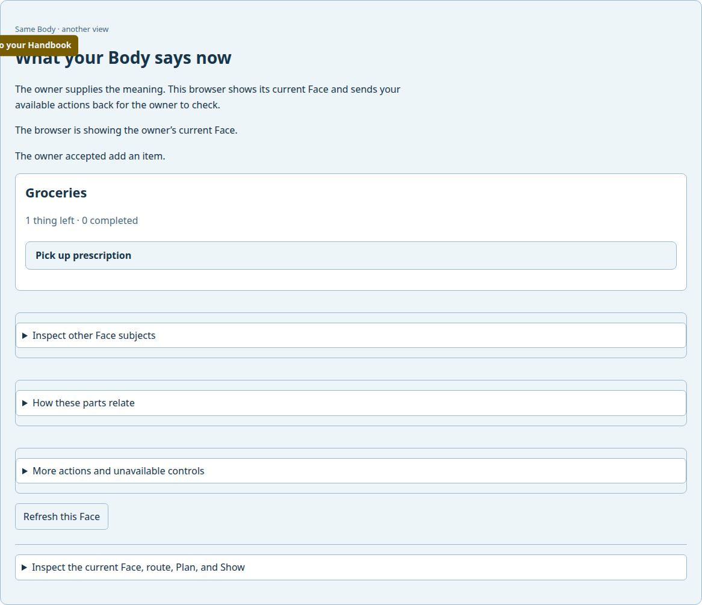
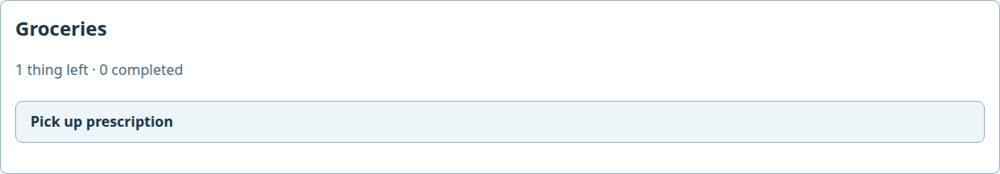
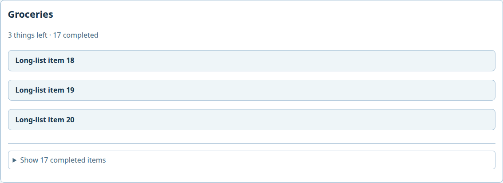

Local development journey · one Body · live Chromium
Grow a Groceries list across Masks
First, the browser adds “Pick up prescription.” Later, terminal actions build the same Body into a 20-item list. The browser rejoins and shows the result: three things left, seventeen completed.
The first capture below proves one browser Add action. Its installed owner came from source 99399c157 and its browser runtime from f7778c323, so that capture is cross-source development evidence. The later sections follow the same Body through terminal changes, an exact-source browser rejoin, and a selected-speaker Play. This is still a partial development journey, not stable release acceptance.
What happened
- An installed Linux Host offered Todo during Crèche Birth. The owner selected it and gave the new Body a Groceries list.
- Chromium joined that Body through an authorized owner window, inspected its wardrobe, and selected the browser Mask.
- The owner started a Todo Play. The browser received an available Add action. The proof driver entered “Pick up prescription” and activated it.

Before the action: Groceries has no items, and Add is available in this Show. - The owner accepted the action. The browser received a different Show with the new item, and a separate owner Face read confirmed that the same Body contains it.

After the action: the item appears in a fresh Face. The owner also reports that it accepted Add.

The before and after screenshots come from the action-performing browser session. A full-page capture shows the read-only rejoin around the cleaner card. The action receipt records the Body, browser Host, Face revisions, and distinct Show identities. The card observation receipt binds the cleaner images to that original run.

Return after the list grows
On that same Body, the terminal proof driver used admitted actions to add the remaining items and complete seventeen of the twenty. Each action committed and was read back from the selected checkpoint. The last three items remain open. A fresh installed Host Boot then recovered that Body; an exact-source browser Mask joined and displayed the changed Face without another Birth.

The full-page screenshot shows this card in the browser workspace. The terminal summary records all twenty items and their completion flags; the browser receipt records its matching Body, Face, counts, and screenshot hashes. Terminal actions used source 88f187fdb; the rejoined owner and browser both used source 459e672cb. This proves durable cross-Mask state across a fresh Boot. It does not claim a browser action in the long-list capture or a native graphical view of that list.

Hear what remains
The direct spoken Mask then encountered this same persisted Body on a fresh installed Host Boot. It opened with the list name and counts, followed by only the three unfinished items: “Groceries. 3 things left · 17 completed Long-list item 18. Long-list item 19. Long-list item 20.” It did not recite the seventeen completed items or internal proof identities.
This WAV captures the audio delivered by the completed selected-speaker Play; it is not a later synthesis of the same words. The same-Play proof binds Body, Face, Show, Mask Plan and Play, speaker Plan and Play, words, committed frames, and the WAV hash. The spoken status receipt records the completed speaker batch. This run used source 801c83b46. Requested-detail speech, model-assisted speech, native graphical presentation, and stable publication remain separate proof steps.